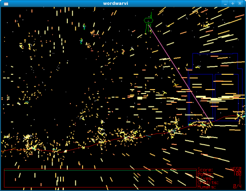
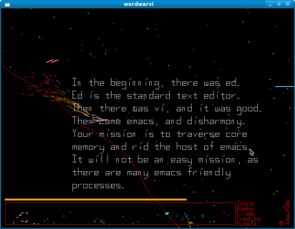

The Next Generation of Linux Games - Word War VI
Many people have made the switch to Linux, and the question that has continued since the kernel hit 0.01 is "where are the games?"
While the WINE project has done a great job at getting quite a few mainstream games working, there are also many Linux-native gems that are fantastic at whittling away the time. No longer content with Solitaire clones, the community is responding with a wide array of fun games.
In this month's review, we are looking at Word War VI. With graphics that initially look straight out of the Atari days, one might be tempted to overlook the game for something a little showier. However, within minutes I was hooked with the Defender-like gameplay, and the fireworks and explosions rippling across the screen had satisfied my eye-candy requirements.
The graphics look like the old 80's arcade shooters, but the polish and smoothness of the visuals make it quite clear that this is an intentional part of the game's aesthetic. Also, a quick look at the game's man page reveal that there is a wealth of options: adjusting how the game looks, the difficulty settings, the choice of bigger explosions (which look awesome), and even a mode where you play as Santa Claus (wordwarvi --xmas).
The controls are simple, mostly relying on the spacebar and arrow keys. The goal is to grab as many humans while avoiding various missiles, alien ships, and other enemies. The real beauty is the 'easy to learn, hard to master' approach, which suits the space-shooter genre just fine.
Stephen Cameron's little side-project about "The Battle of the Text Editors" has blossomed into a respectable game. He has done a great job documenting on how to hack the game and extend it even further, leaving endless possibilities of more fun and crazy modes. The source is located at the Word War VI website, though the game is likely already packaged by your distribution.
If there's a game you would like to see reviewed, or have an update on one already covered, just drop me a line.
Talkback: Discuss this article with The Answer Gang
![[BIO]](../gx/authors/crosby.jpg)
Dafydd Crosby has been hooked on computers since the first moment his dad let him touch the TI-99/4A. He's contributed to various different open-source projects, and is currently working out of Canada.